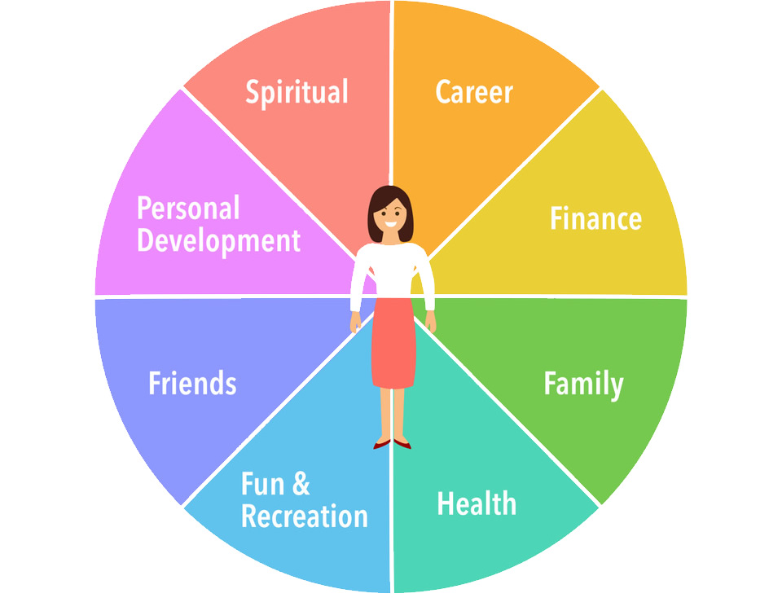

About This Blog
Welcome to Life in Focus! This space is all about helping you balance the demands of studying with the joys of hobbies, organize your daily life, and learn essential life skills. Whether you’re a student aiming for productivity or simply someone looking to incorporate practical routines into your life, you’re in the right place.
What You'll Find Here
- Tips for Balancing Studies and Hobbies: Discover strategies to keep up with studies while making time for what you love. We offer insights on setting boundaries, using planners, and managing time effectively so you can find a balance that works for you.
- Simple Organization Routines: Find routines that bring structure to your day. From morning to evening checklists to weekly planning tips, we’ll show you how to keep everything running smoothly with less stress.
- Effective Study Tips: Studying doesn’t have to be overwhelming! Learn about methods like Active Recall, the Pomodoro Technique, and other focus tips to help you make the most of your study sessions.
- Essential Life Skills: Life skills are key to personal growth and success. Our posts will guide you in budgeting, setting goals, creating effective to-do lists, and much more.
Who’s Behind the Blog
I'm Vihansa Thathsiluni, an undergraduate who is passionate about productivity.
Through this blog, I’m excited to share the tips and routines that have made a difference in my own life, and I hope they’ll be just as helpful for you!
Join the Journey
Stick around as we explore ways to stay productive, organized, and balanced. Feel free to share your own tips, ask questions, or suggest topics you'd like to see!
